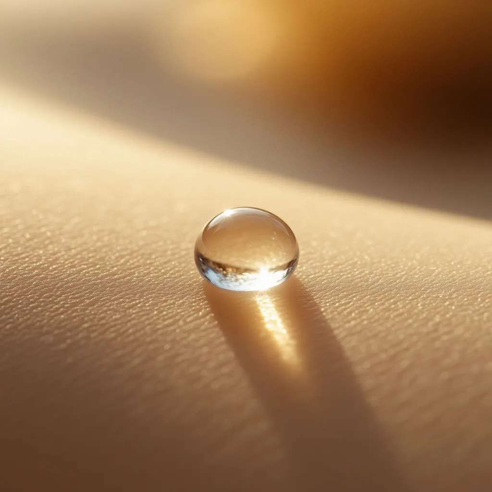

Больно ли делать лазерную эпиляцию: правда о диодном лазере с охлаждением

Страх боли — главная причина, по которой многие откладывают лазерную эпиляцию. Насмотревшись страшилок в интернете, клиенты ожидают адских мучений. На деле всё иначе. Современные технологии позволяют сделать процедуру почти незаметной. Разбираемся честно, без прикрас.
Что чувствует человек во время процедуры
Большинство клиентов описывают ощущения как лёгкое покалывание или тёплые щелчки по коже. Представьте, что вы проводите по коже тёплой монеткой — примерно так это и ощущается. Никакой острой боли.
Секрет — в длине волны 808 нм. Диодный лазер работает избирательно: нагревает только волосяной фолликул, а не всю кожу вокруг. Плюс наш аппарат EVOLUTION оснащён мощной системой охлаждения — она подаёт холод на кожу до, во время и после импульса.
Какие зоны самые чувствительные
Чувствительность зависит от толщины кожи и близости нервных окончаний. Объективно: самая чувствительная зона — глубокое бикини. Чуть меньше — подмышки. Наименее чувствительные — ноги и руки.
Но даже на бикини процедура переносится легко. Мы подбираем мощность индивидуально и при необходимости используем охлаждающий гель. 98% клиентов проходят процедуру без обезболивания.
Сравнение с другими методами
Для сравнения: восковая эпиляция — это резкая боль на несколько секунд. Шугаринг — примерно то же самое. Электроэпиляция ощущается как точечные уколы. А лазер — это комфортное тепло с охлаждением. Многие клиенты во время процедуры спокойно общаются или даже дремлют.
Почему в LaserSilk не больно
Наш диодный лазер EVOLUTION оснащён сапфировой насадкой с постоянным охлаждением до -5°C. Холод подаётся непрерывно — кожа не успевает нагреться. Плюс мастера с медицинским образованием точно знают, какой режим подобрать под ваш тип кожи и волос.
Как уменьшить чувствительность самостоятельно
За сутки до процедуры откажитесь от кофе и алкоголя — они повышают чувствительность. Выспитесь. Приходите в свободной одежде из натуральных тканей. Если сильно переживаете — предупредите мастера, он подберёт самый щадящий режим.
Проверьте сами — это не больно
Приходите на бесплатную консультацию в студию у м. Водный стадион. Сделаем тестовую вспышку, чтобы вы убедились лично. Скидка 30% новым клиентам.
ЗаписатьсяЗвоните: 8 (991) 574-47-17
подскажем, какая эпиляция вам подходит.